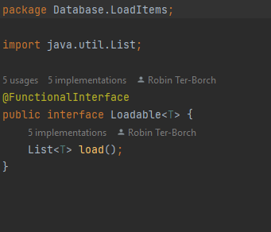
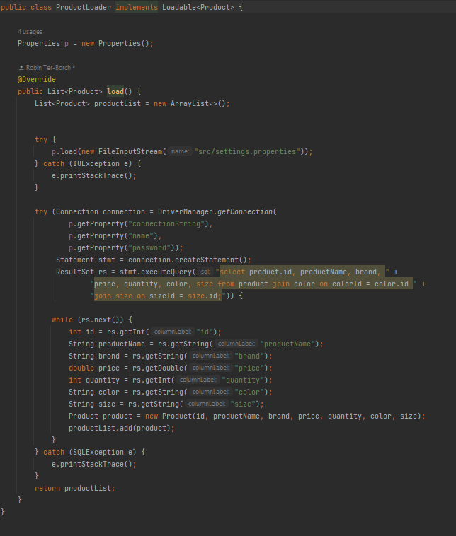
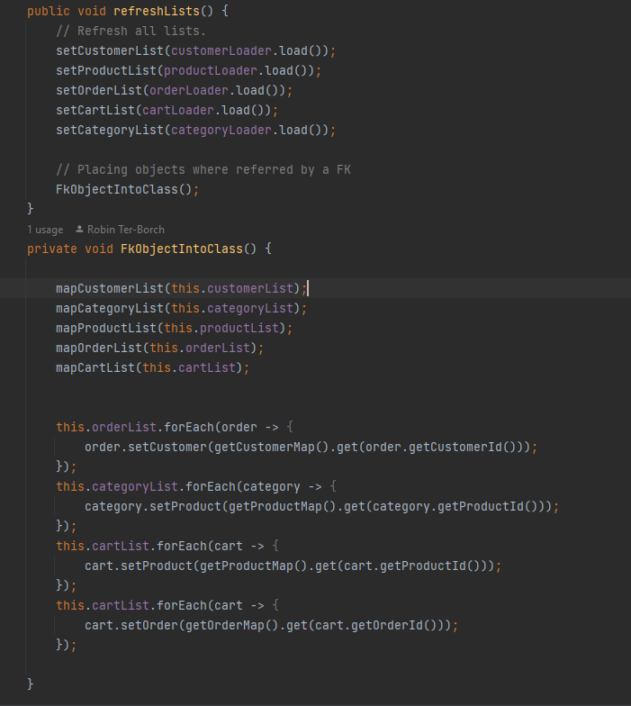

I kursen funktionell programmering fick vi i uppgift att importera
information från en databas till listor i vårt javaprogram, som sedan
skulle användas för att se statistik mm. Vi fick endast använda oss av
enkla SQL kommandon resterande skulle hanteras i java.
Jag vill visa upp just hur jag via ett interface "load" samlar in
informationen från databasen, gör om det till object och lägger i listor
till tillhörande foreign-key.
Interfacet loadable implementeras av alla mina importklasser till databasen
ProductLoader använder load() för att generera en produktlista. Jag använder mig av enkel SQL och lägger sedan in varje element i ett objekt "product" som jag skapar. sedan läggs objektet in i listan productList
Varje gång mitt program utförde något, som tex ett köp eller på annat sätt ändrade i databasen kördes en metod refreshLists som uppdaterade alla listor och satte in i de klasser som använde sig av foreign-keys
